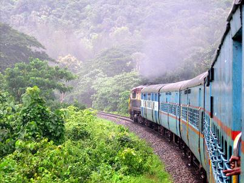
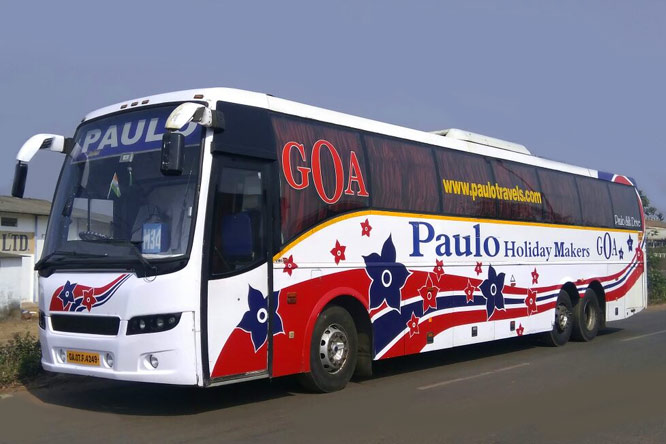
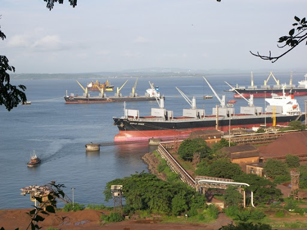

TRANSPORTATION:
AIR:
Goa International Airport, at INS Hansa, a Naval airfield located at Dabolim near Vasco da Gama.it supports the nation and international flights.
A greenfield airport is under construction at Mopa in Pernem taluka. It is expected to be completed by 2022.
ROAD: Goa's public transport largely consists of privately operated buses linking the major towns to rural areas. Government-run buses, maintained by the Kadamba Transport Corporation, link major routes (like the Panaji–Margao route) and some remote parts of the state. The Corporation owns 15 bus stands, 4 depots and one Central workshop at Porvorim and a Head Office at Porvorim. In large towns such as Panaji and Margao, intra-city buses operate. However, public transport in Goa is less developed, and residents depend heavily on their own transportation, usually motorised two-wheelers and small family cars.
National Highways in Goa are among the narrowest in the country and will remain so for the foreseeable future.Another form of transportation in Goa is the motorcycle taxi, operated by drivers who are locally called "pilots". These vehicles transport a single pillion rider, at fares that are usually negotiated. Other than buses, "pilots" tend to be the cheapest mode of transport. River crossings in Goa are serviced by flat-bottomed ferry boats, operated by the river navigation department.
RAILWAY:
Goa has two rail lines – one run by the South Western Railway and the other by the Konkan Railway. The line run by the South Western Railway was built during the colonial era linking the port town of Vasco da Gama, Goa with Belgaum, Hubli, Karnataka via Margao. The Konkan Railway line, which was built during the 1990s, runs parallel to the coast connecting major cities on the western coast.
SEA: The Mormugao Port Trust near the city of Vasco handles mineral ore, petroleum, coal, and international containers. Much of the shipments consist of minerals and ores from Goa's hinterland. Panaji has a minor port, which used to handle passengers steamers between Goa and Mumbai till the late 1980s. There was also a short-lived catamaran service linking Mumbai and Panaji operated by Damania Shipping in the 1990s.


